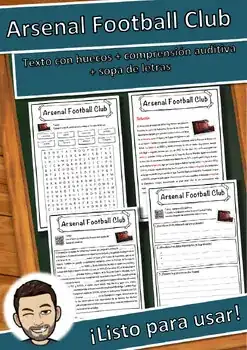
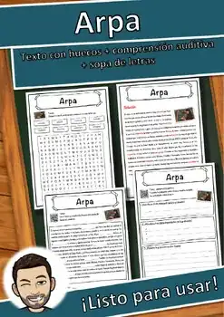
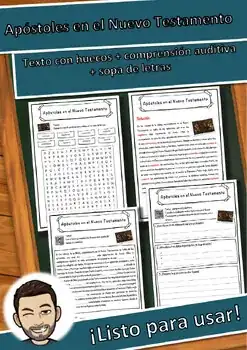
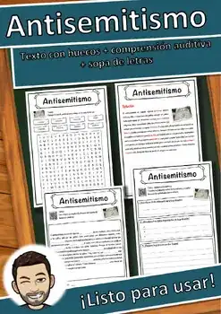
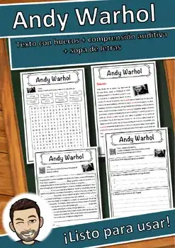
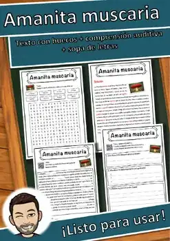
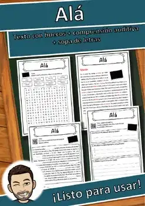
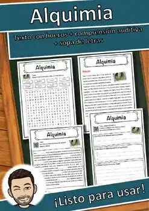

Recursos nuevos
Aquí aparecen primero mis recursos más nuevos. La lista se actualiza automáticamente.
48 recursos

«El laboratorio de pan de jengibre: Geometría entre moldes, medidas y casas» – Búsqueda del tesoro de lectura

«Luz y energía en invierno» – Búsqueda del tesoro de lectura

«Sal sobre el hielo» – Búsqueda del tesoro de lectura

Juego de roles multiplicación y división | Panadería de Navidad Grado 2

«Aventura de conteo con castañas» – Búsqueda del tesoro de lectura

«Viaje por el corazón» – Búsqueda del tesoro de lectura

«Fiestas de las religiones» – Búsqueda del tesoro de lectura

Año Nuevo – Ficha de lectura: texto con huecos, comprensión auditiva y sopa de letras

Azerbaiyán – Ficha de lectura: texto con huecos, comprensión auditiva y sopa de letras

Avión – Ficha de lectura: texto con huecos, comprensión auditiva y sopa de letras

Aves – Ficha de lectura: texto con huecos, comprensión auditiva y sopa de letras

Atlas – Ficha de lectura: texto con huecos, comprensión auditiva y sopa de letras

Arte – Ficha de lectura: texto con huecos, comprensión auditiva y sopa de letras

Atletismo – Ficha de lectura: texto con huecos, comprensión auditiva y sopa de letras

Atenas – Ficha de lectura: texto con huecos, comprensión auditiva y sopa de letras

Astérix el Galo – Ficha de lectura: texto con huecos, comprensión auditiva y sopa de letras

Astronomía – Ficha de lectura: texto con huecos, comprensión auditiva y sopa de letras

Astronauta – Ficha de lectura: texto con huecos, comprensión auditiva y sopa de letras

Astrid Lindgren – Ficha de lectura: texto con huecos, comprensión auditiva y sopa de letras

Asma – Ficha de lectura: texto con huecos, comprensión auditiva y sopa de letras

Arte gótico – Ficha de lectura: texto con huecos, comprensión auditiva y sopa de letras

Arsenal Football Club – Ficha de lectura: texto con huecos, comprensión auditiva y sopa de letras

Arroyo – Ficha de lectura: texto con huecos, comprensión auditiva y sopa de letras

Arpa – Ficha de lectura: texto con huecos, comprensión auditiva y sopa de letras

Armada – Ficha de lectura: texto con huecos, comprensión auditiva y sopa de letras

Ardenas – Ficha de lectura: texto con huecos, comprensión auditiva y sopa de letras

Apóstoles en el Nuevo Testamento – Ficha de lectura: texto con huecos, comprensión auditiva y sopa de letras

Apache – Ficha de lectura: texto con huecos, comprensión auditiva y sopa de letras

Antonio Vivaldi – Ficha de lectura: texto con huecos, comprensión auditiva y sopa de letras

Antisemitismo – Ficha de lectura: texto con huecos, comprensión auditiva y sopa de letras

Antimonio – Ficha de lectura: texto con huecos, comprensión auditiva y sopa de letras

Antiguo Egipto – Ficha de lectura: texto con huecos, comprensión auditiva y sopa de letras

Antigua Grecia – Ficha de lectura: texto con huecos, comprensión auditiva y sopa de letras

Anorexia nerviosa – Ficha de lectura: texto con huecos, comprensión auditiva y sopa de letras

Ankara – Ficha de lectura: texto con huecos, comprensión auditiva y sopa de letras

Anguis fragilis – Ficha de lectura: texto con huecos, comprensión auditiva y sopa de letras

Andy Warhol – Ficha de lectura: texto con huecos, comprensión auditiva y sopa de letras

André-Marie Ampère – Ficha de lectura: texto con huecos, comprensión auditiva y sopa de letras

Andorra la Vieja – Ficha de lectura: texto con huecos, comprensión auditiva y sopa de letras

Andorra – Ficha de lectura: texto con huecos, comprensión auditiva y sopa de letras

Anatomía – Ficha de lectura: texto con huecos, comprensión auditiva y sopa de letras

Ana Frank – Ficha de lectura: texto con huecos, comprensión auditiva y sopa de letras

Amphibia – Ficha de lectura: texto con huecos, comprensión auditiva y sopa de letras

Ambystoma mexicanum – Ficha de lectura: texto con huecos, comprensión auditiva y sopa de letras

Amanita muscaria – Ficha de lectura: texto con huecos, comprensión auditiva y sopa de letras

Alá – Ficha de lectura: texto con huecos, comprensión auditiva y sopa de letras

Alud – Ficha de lectura: texto con huecos, comprensión auditiva y sopa de letras

Alquimia – Ficha de lectura: texto con huecos, comprensión auditiva y sopa de letras
No se encontraron recursos. Prueba con otra palabra o con otro filtro.